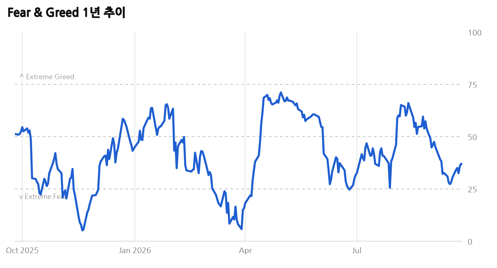
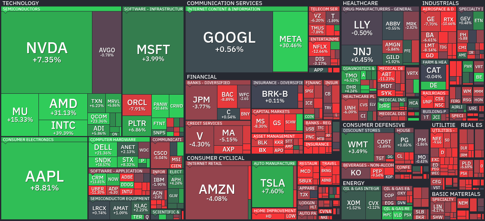
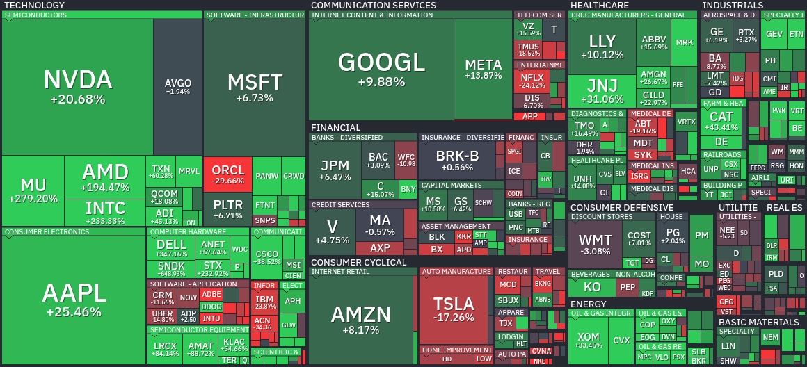
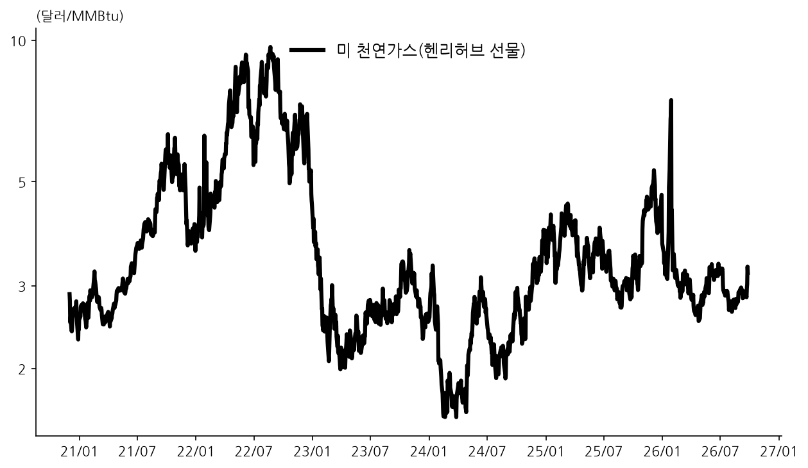
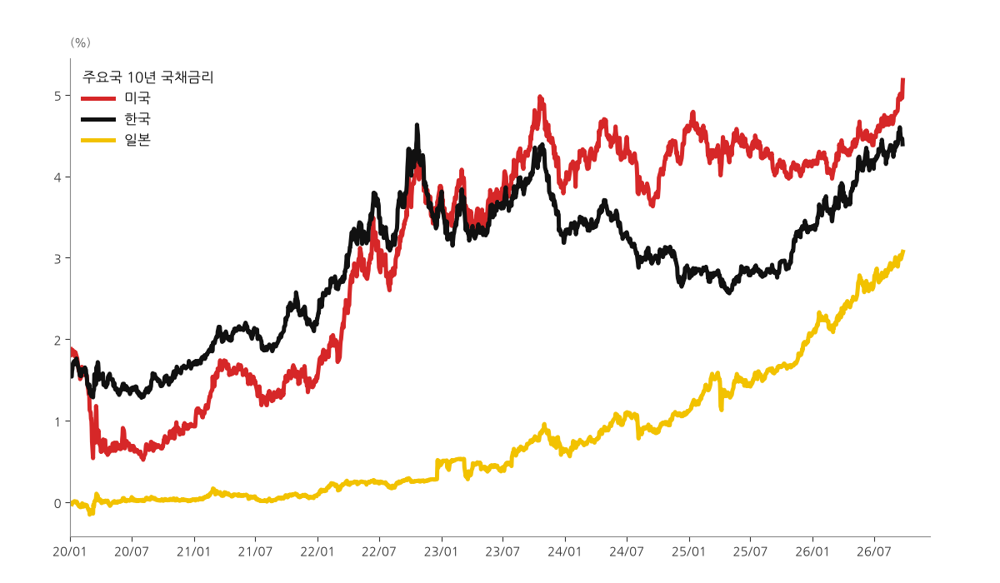
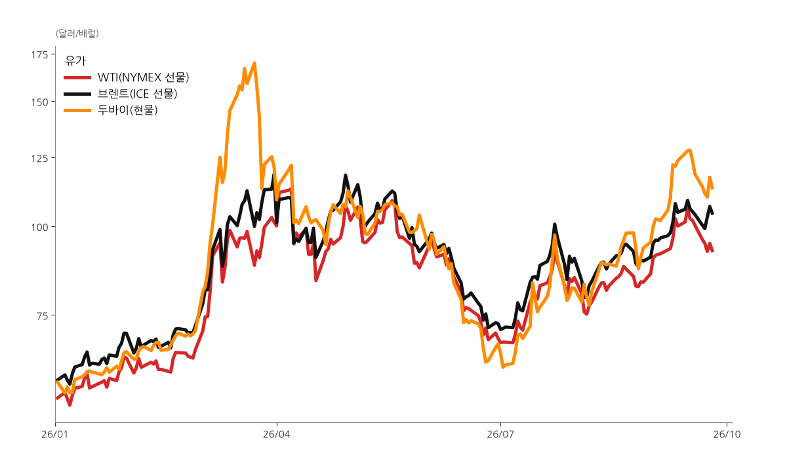
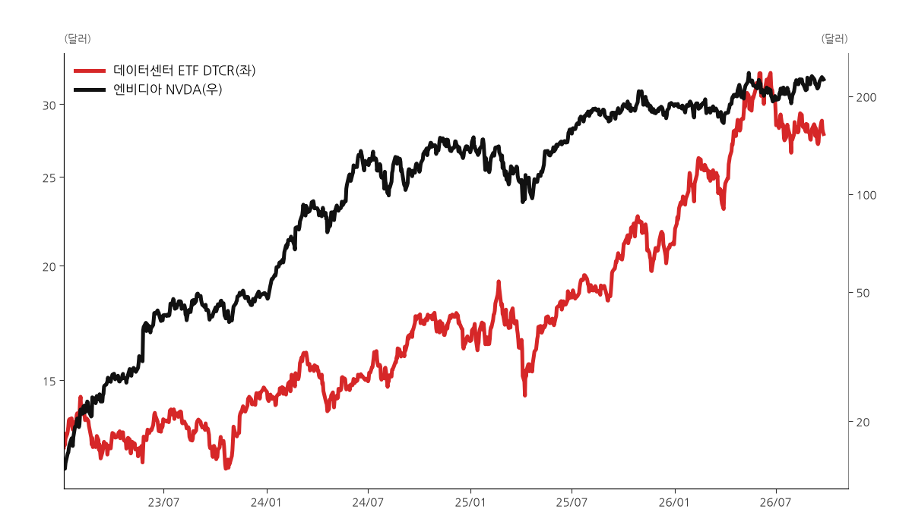
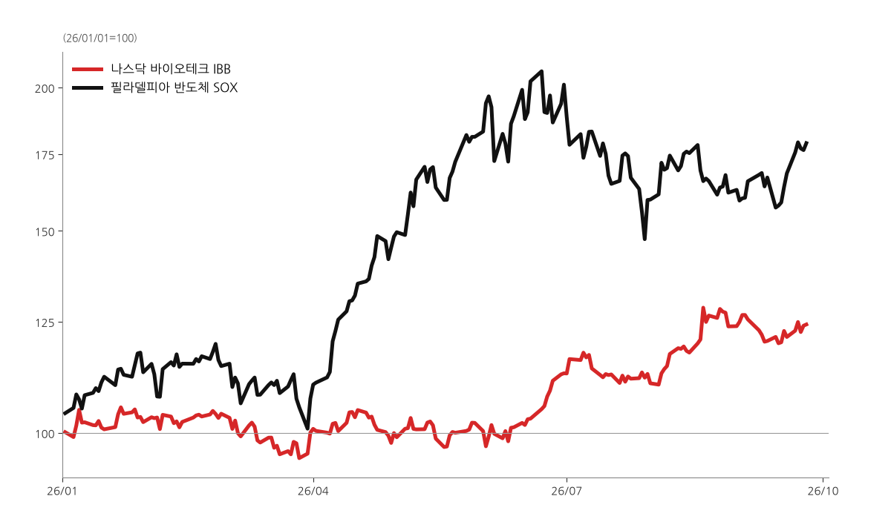

🦉 Owl Capital 아침 브리핑
2026년 9월 27일 (일) · 06:08 KST 생성
1Fear & Greed


2블로그 새 글 (최근 24시간)
블로그 새 글 16건
알바트로스의 파생 이야기 (1건)
메르의 블로그 (2건)
피우스의 책도둑 & 매거진 (12건)
- [오늘의 차트] AI '뮤즈' 날개 달고 30% 급등한 메타... 위기마다 반등 성공한 저커버그의 저력
- [스펜서 자캅] AI와 소셜 미디어로 정교해진 주가 조작, 이제 투자자 스스로 방어해야 할 때
- 미·중 정상만찬에 집결한 미국 빅테크 CEO들... 반도체·AI 안전 등 주요 현안 논의
- "내 몫의 나랏빚은 얼마?"…1인당 정부 부채로 본 글로벌 경제
- 워런 버핏의 작별 서한: "시간은 언제나 승리한다"와 복리의 마법
- 엔비디아의 파격적 배당 인상이 주목시킨 '배당 성장주'의 재발견
- 중국 제조업의 화려한 진화: 첨단 자동화와 글로벌 경제 파동
- [낙관론자의 승리] "꿈을 미루지 마라": 쇼생크 탈출 뒤에 숨겨진 또 하나의 감동 실화
- 월스트리트 황금률의 경고: "주식, 무작정 오랫동안 들고 있지 마라"
- 로빈후드위 최고 중개 책임자 말하는 투자자들의 3가지 실수와 해결 방법
- 빅테크 쏠림이 만든 착시... 미국 대형주 '마이너스 베타' 종목 급증의 의미
- [마크 헐버트] 이론과 다른 현실 시장: 저베타 전략을 유지하되 '이 한 주'만 고베타에 베팅하라
Rafiki Research (1건)
3핀비즈 S&P 500 히트맵



4미 천연가스

5차트
미 10Y-2Y 스프레드

주요국 10년 국채금리

유가

미 가솔린 소매가격

데이터센터 ETF·엔비디아

바이오테크·반도체 연초 대비

6메모리
DRAM ETF $61.91 (+2.0%)
· 좌수 4억 3,433만좌
SK하이닉스 2배(7709) HK$42.52 (-3.0%, 9/24)
· 좌수 8억 4,200만좌 (9/23)
삼성전자 2배(7747) HK$82.80 (-4.1%, 9/24)
· 좌수 1억 100만좌 (9/23)
DRAM 현물가(세션 평균) 9/24
DDR5 16Gb $57.667 (+0.29%)
DDR4 16Gb $83.784 (-0.70%)
DDR4 8Gb $46.107 (+0.47%)